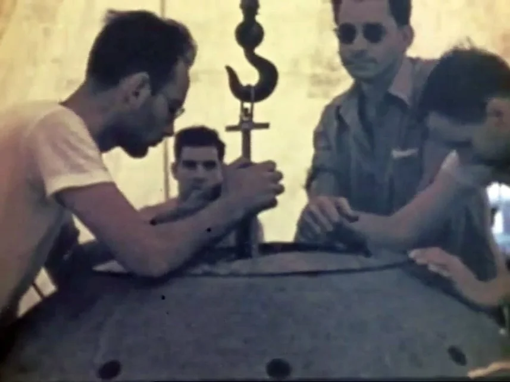
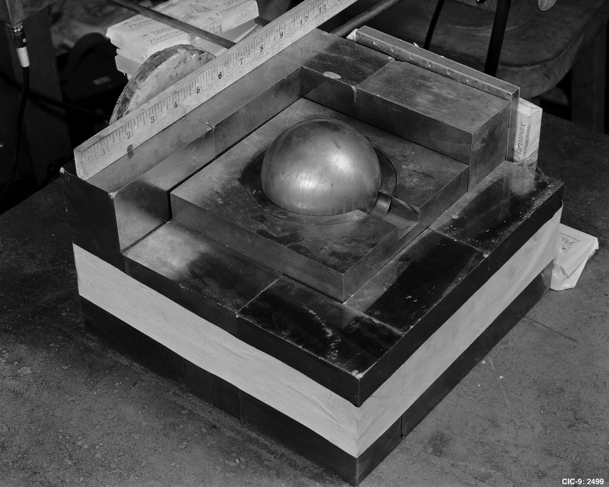
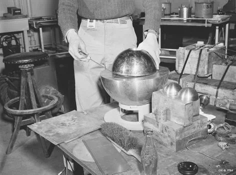
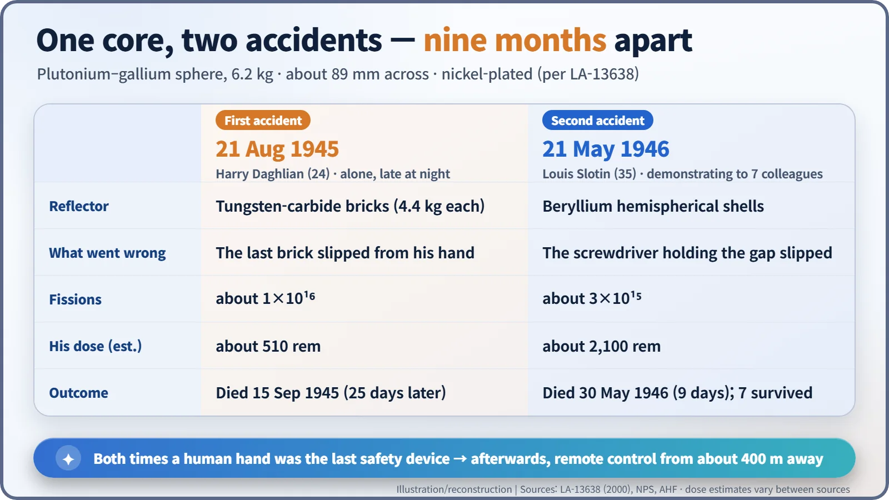
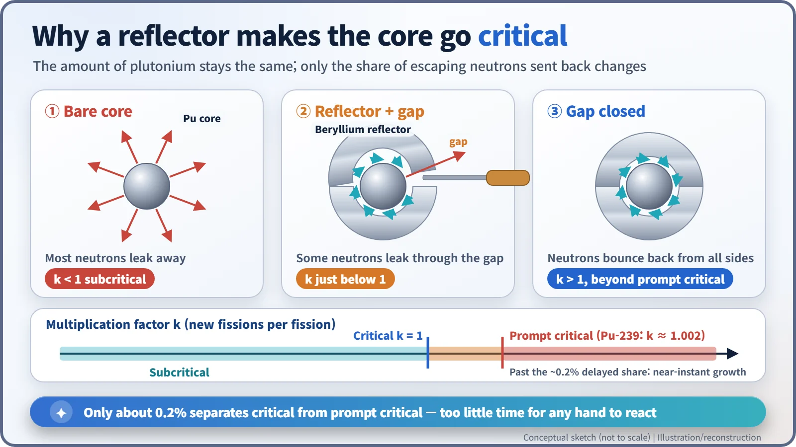

Nuclear History · 124
A Screwdriver's Width of Safety — The "Demon Core" Criticality Accidents (1945–1946)
A dropped brick, a slipping screwdriver, and why safety now rests on systems rather than steady hands.
The same 6.2 kg plutonium core, built for a third atomic bomb that was never used, killed two Los Alamos physicists nine months apart. Harry Daghlian dropped a reflector brick onto it in August 1945; Louis Slotin's screwdriver slipped in May 1946. Their deaths ended hands-on criticality experiments and helped lay the foundations of modern criticality safety.
Every toolbox has one: a plain flat-head screwdriver. You turn screws with it, pry open paint tins, and now and then wedge something open for a moment. On 21 May 1946, in a laboratory at Los Alamos, New Mexico, a screwdriver like that was doing the last of those jobs. It was propping up a beryllium shell over a plutonium core, and the gap it held open, about the thickness of its blade, was the only thing standing between a room full of people and a runaway chain reaction.
The third core that never flew
The central character in this story is not a person but a ball of metal. It was a sphere of plutonium–gallium alloy about 89 mm (3.5 inches) across, weighing 6.2 kg, made as two hemispheres and plated with a thin layer of nickel because plutonium corrodes easily. It had been made for a third atomic bomb, to be used if Japan did not surrender. When the war ended in August 1945, it stayed at Los Alamos. [1] [3]
There it was used for criticality experiments. "Critical" means each fission triggers, on average, exactly one more, so the chain reaction sustains itself. Weapon designers needed to know precisely how close a core was to that point, and their method was startlingly hands-on. They stacked a neutron reflector, material that bounces escaping neutrons back into the core, around it piece by piece, listening as the clicks of a neutron counter sped up.

The first night: a brick that slipped
On the night of 21 August 1945, 24-year-old physicist Harry K. Daghlian Jr. (1921–1945) was working alone at the laboratory's Omega Site. An Army guard was in the building but was not taking part. Daghlian was building a reflector of tungsten-carbide bricks, each weighing 4.4 kg, around the core. As he moved the final brick into place, the counters told him it would push the assembly supercritical. While he was pulling his hand back, the brick slipped and fell onto the centre of the stack. [1] [2]
The assembly went beyond prompt critical at once. Daghlian knocked the brick away and took the stack apart by hand. Los Alamos's review of criticality accidents (LA-13638) puts the burst at about 1016 fissions and his dose at about 510 rem. He died on 15 September, 25 days later. (The same report says "28 days"; the date given by the U.S. National Park Service and others is 15 September.) The National Park Service calls it "the first known death due to exposure to radiation in a laboratory setting." [1] [2]

The second afternoon: a slipping screwdriver
After the first accident a rule was introduced that nobody should work alone. But reflectors were still handled by hand. Nine months later, on 21 May 1946, the Canadian-born physicist Louis Slotin (1910–1946), who had assembled the core for the Trinity test, was showing seven colleagues how to bring a metal assembly close to critical. This time the reflector was a pair of beryllium hemispherical shells. One edge of the upper shell rested on the lower hemisphere; the opposite edge, according to the accident report, was "resting on the tip of a screwdriver." Slotin held the top shell with his left thumb in a hole at its crown and adjusted the gap with the screwdriver. Richard Feynman is said to have described this kind of work as "tickling the dragon's tail." [1] [5]
Then the screwdriver slipped. The shell closed, and the core went beyond prompt critical. Slotin flipped the upper shell off at once; the report thinks the assembly came apart in less than half a second. The burst was about 3×1015 fissions, and the eight people in the room received doses ranging from about 2,100 rem down to 37 rem. Slotin died nine days later, on 30 May. The other seven survived. [1] [3]


No explosion, so why so deadly?
The energy released by 1016 fissions is roughly 320,000 joules, about what it takes to heat a litre of water to boiling. There was no bang. What mattered was the pulse of neutrons and gamma rays released in that instant, which was lethal at close range.
Speed was the other danger. Most neutrons from fission fly out immediately, but for plutonium-239 about 0.2% come out a little later. Those latecomers are what give people time to control a reactor. If a system becomes supercritical even without them (prompt critical), the chain reaction grows in the blink of an eye. Both accidents crossed that line, and in both, the last safety device was a human hand.

What outlasted the hero story
Slotin is often remembered as a hero who saved his colleagues by pulling the assembly apart. Yet some who were there argued that the method itself, using a screwdriver instead of the approved spacers, was improper and unsafe. Both views are on the record. [3] [5]
The lasting change was institutional. Los Alamos stopped all hand-assembled experiments that could reach criticality and switched to remote control from a building about a quarter of a mile (roughly 400 m) away. Today, facilities that handle nuclear fuel limit mass, shape, reflection and moderation in advance and follow the double contingency principle: a criticality accident should be possible only if at least two unlikely, independent mistakes happen together. Safety comes not from an expert's steady hand, but from a system where a slipping hand does no harm. [3]
The core was melted down in the summer of 1946 and its plutonium reused. "Demon core" is a nickname added later. The danger was never in the metal; it was in the procedure.